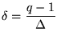

|
You are here : Control
System Design - Index | Book Contents |
Chapter 12
12. Models for Sampled Data Systems
Preview
Modern control systems are almost always implemented in a digital
computer. It is thus important to have an appreciation of the impact of
implementing a particular control law in digital form. In this chapter
we provide the fundamental modeling tools necessary to describe the
sampled response of continuous-time plants. The main topics included
are:
- Discrete-time signals
- Z-transforms and Delta transforms
- Sampling and reconstruction
- Aliasing and anti-aliasing filters
- Sampled-data control systems
It is common in many courses on control to either treat sampling at a
much later point or even to move it to a separate course specifically
devoted to digital control. However, our view is that there is so much
in common between continuous and digital control, that one can introduce
sampling ideas early and then, essentially, present both ideas
simultaneously.
Summary
- Very few plants encountered by the control engineer are digital,
most are continuous. That is, the control signal applied to the
process, as well as the measurements received from the process, are
usually continuous time.
- Modern control systems, however, are almost exclusively
implemented on digital computers.
- Compared to the historical analog controller implementation, the
digital computer provides
- much greater ease of implementing complex algorithms,
- convenient (graphical) man-machine interfaces,
- logging, trending and diagnostics of internal controller and
- flexibility to implement filtering and other forms of signal
processing operations.
- Digital computers operate with sequences in time, rather than
continuous functions in time.
- Therefore,
- input signals to the digital controller-notably process
measurements - must be sampled;
- outputs from the digital controller-notably control signals -
must be interpolated from a digital sequence of values to a
continuous function in time.
- Sampling (see Figure 12.7) is carried out by A/D (analog to
digital) converters.
- The converse, reconstructing a continuous time signal from digital
samples, is carried out by D/A (digital to analog) converters. There
are different ways of interpolating between the discrete samples,
but the so called zero-order hold (see Figure 12.8) is by far the
most common.
- When sampling a continuous time signal,
- an appropriate sampling rate must be chosen
- an anti-aliasing filter (low-pass) should be included to avoid
frequency folding.
- Analysis of digital systems relies on discrete time versions of
the continuous operators.
- The chapter has introduced two discrete operators:
- the shift operator, q, defined by
![$qx[k]\stackrel{\rm\triangle}{=}x[k+1]$](part4-img6.gif)
- the
 -operator,
,
defined by -operator,
,
defined by
- Thus,
,
or
- Due to this conversion possibility, the choice is largely based on
preference and experience. Comparisons are outlined below.
- The shift operator, q,
- is the traditional operator;
- is the operator many engineers feel more familiar with;
- is used in the majority of the literature.
- The -operator,
,
has the advantages of:
- emphasizing the link between continuous and discrete systems
(resembles a differential);
- -expressions
converge to familiar continuous expressions as
,
which is intuitive;
- is numerically vastly superior at fast sampling rates when
properly implemented.
- Analysis of digital systems relies on discrete time versions of
the continuous operators:
- the discrete version of the differential operator is a
difference operator;
- the discrete version of the Laplace transform is either the
Z-transform (associated with the shift operator) or the -transform (associated with the -operator).
- With the help of these operators,
- continuous time differential equation models can be converted
to discrete time difference equation models;
- continuous time transfer or state space models can be
converted to discrete time transfer or state space models in
either the shift or
operators.
|